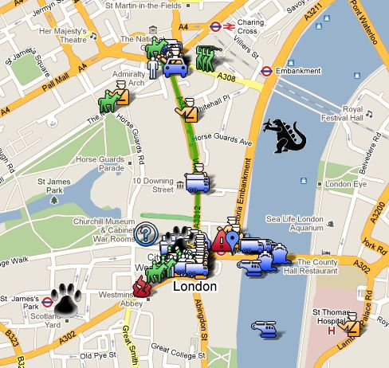
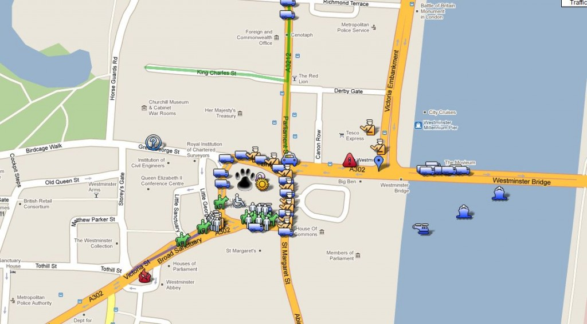
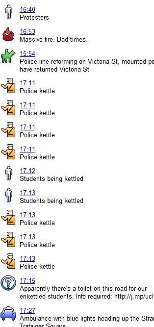

The protests against tuition hikes in London today are leveraging Google Maps to track official response (and Godzilla, apparently). I’m not a fan of Google Maps or the entire Google Geo Ecosystem, but the ability to quickly create and update spatial data is definitely one benefit of its user-oriented design.

And, of course, a bit of the legend (I’m sure the helicopters and Godzilla are self-explanatory).
